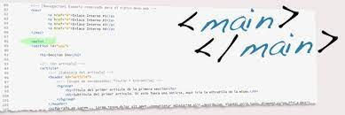
HEADER
contiene el título principal y un menú de navegación. Se usa para agrupar estos elementos que forman la introducción o el encabezado de la página web.
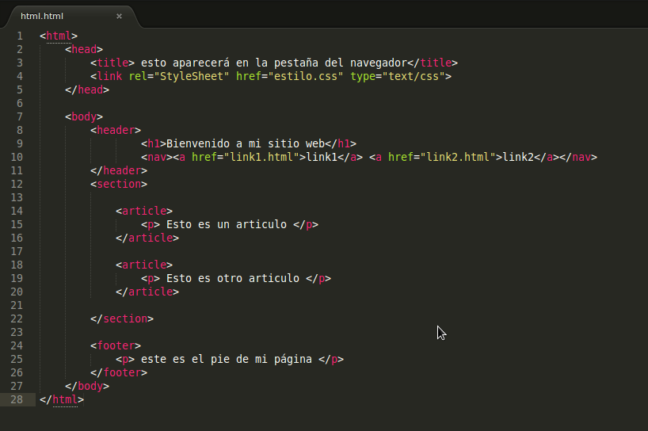NAV
el elemento
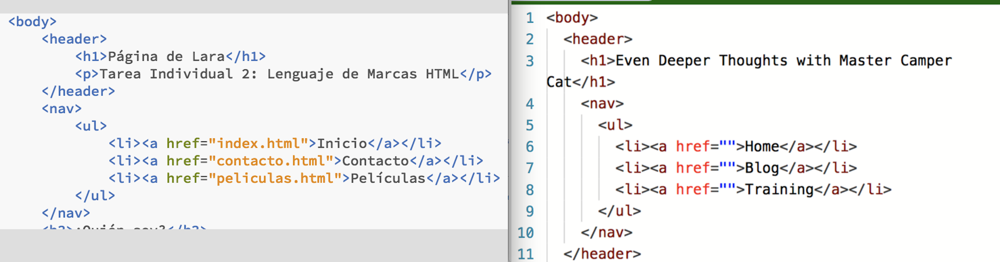FOOTER
generalmente contiene información que se aplica a todo el documento o a una sección en particular. Esto puede incluir enlaces a redes sociales, información de contacto, atribuciones de autoría o cualquier otra información relevante para el sitio web
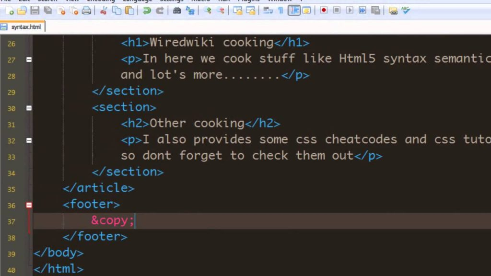SECTION
se utiliza para dividir o agrupar contenido relacionado dentro de un documento web. Esta etiqueta se emplea para crear secciones autónomas o distintas en una página, las cuales pueden contener subsecciones, texto, imágenes, u otros elementos. Su propósito es estructurar y organizar el contenido de manera semántica, lo que facilita la comprensión del documento para los desarrolladores, motores de búsqueda y tecnologías de asistencia.
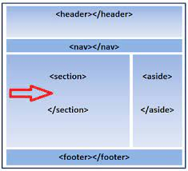ARTICLE
encapsula un artículo con un título y contenido. Puede ser una publicación de blog, una noticia, una publicación en redes sociales, etc. El objetivo es marcar esta sección como un contenido autónomo que tiene sentido por sí solo.
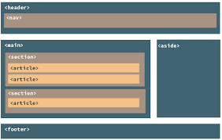EM
se usa para destacar partes del texto que necesitan un énfasis adicional, como la introducción de un término clave, una palabra resaltada por su importancia en el contexto, o un cambio en el tono o énfasis de la oración.
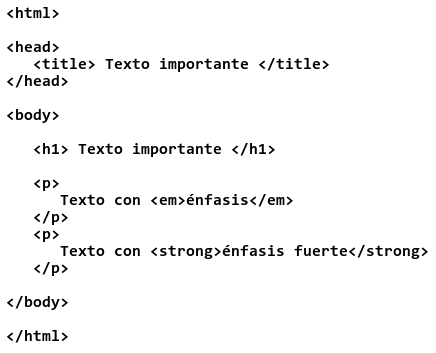DFN
se utiliza para marcar y definir el término de un texto. "DFN" significa "definition" (definición en inglés). Se usa para proporcionar la definición del término en el contexto en el que aparece.
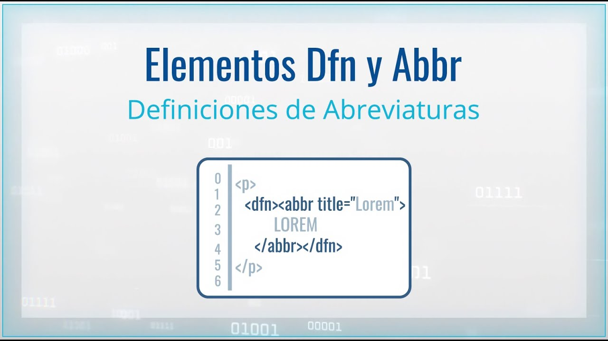Q
se utiliza para marcar una cita corta o en línea en un documento. La etiqueta "q" proviene de "quotation" (cita en inglés). Se utiliza para indicar que un fragmento de texto es una cita directa de otra fuente.
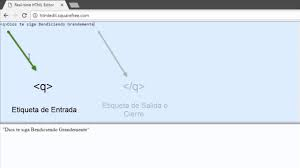PRE
se utiliza para representar texto preformateado, lo que significa que el texto dentro de esta etiqueta conserva tanto los espacios en blanco como los saltos de línea tal y como se escriben en el código HTML.
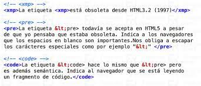ADDRES
Su uso más común es dentro de la etiqueta para proporcionar detalles de contacto, como una dirección física, dirección de correo electrónico, número de teléfono, enlaces a perfiles sociales o cualquier información pertinente para contactar al propietario o autor de la página web.
B
en HTML se usa para aplicar formato de negrita al texto dentro de ella. Originalmente, se usaba para propósitos de estilo, simplemente para hacer que el texto se mostrara en negrita en el navegador web
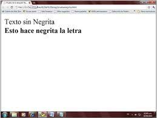I
en HTML se usa para aplicar formato de cursiva al texto contenido en ella. Originalmente, se empleaba para indicar que el texto debería mostrarse en cursiva en los navegadores web.
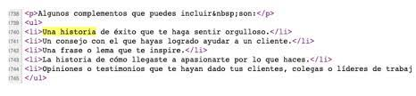S
en HTML se utilizaba para aplicar un estilo de subrayado al texto dentro de ella. Originalmente, se usaba para indicar que el texto debería mostrarse subrayado en los navegadores web.
U
en HTML se utiliza para aplicar un estilo de subrayado al texto contenido en ella. Originalmente, se usaba para indicar que el texto debería mostrarse subrayado en los navegadores web.
SMALL
en HTML se utiliza para definir texto que es de un tamaño menor al texto circundante, indicando que es de menor importancia o relevancia visual en comparación con el texto principal. Originalmente, se usaba para reducir el tamaño de la fuente del texto que contenía
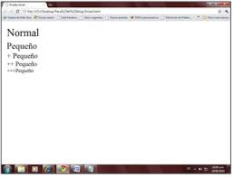ABBR
se utiliza para definir una abreviatura o acrónimo dentro del contenido. Esta etiqueta proporciona información adicional sobre la abreviatura, lo que puede ser útil para los lectores y las herramientas que interpretan la página, ya que permite definir y asociar el significado completo de la abreviatura o acrónimo.
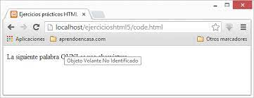ASIDE
se utiliza para marcar contenido relacionado o complementario dentro de una página web. Este contenido es considerado como algo "al margen" del contenido principal, a menudo se presenta en un área lateral, pero no es central para el flujo principal del contenido.
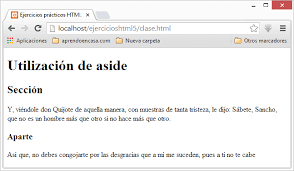DIV
es un elemento de bloque genérico que se utiliza para dividir o agrupar secciones del contenido de una página web. No tiene un significado semántico específico en sí mismo; su propósito principal es dividir el contenido para aplicar estilos o manipularlo con JavaScript.
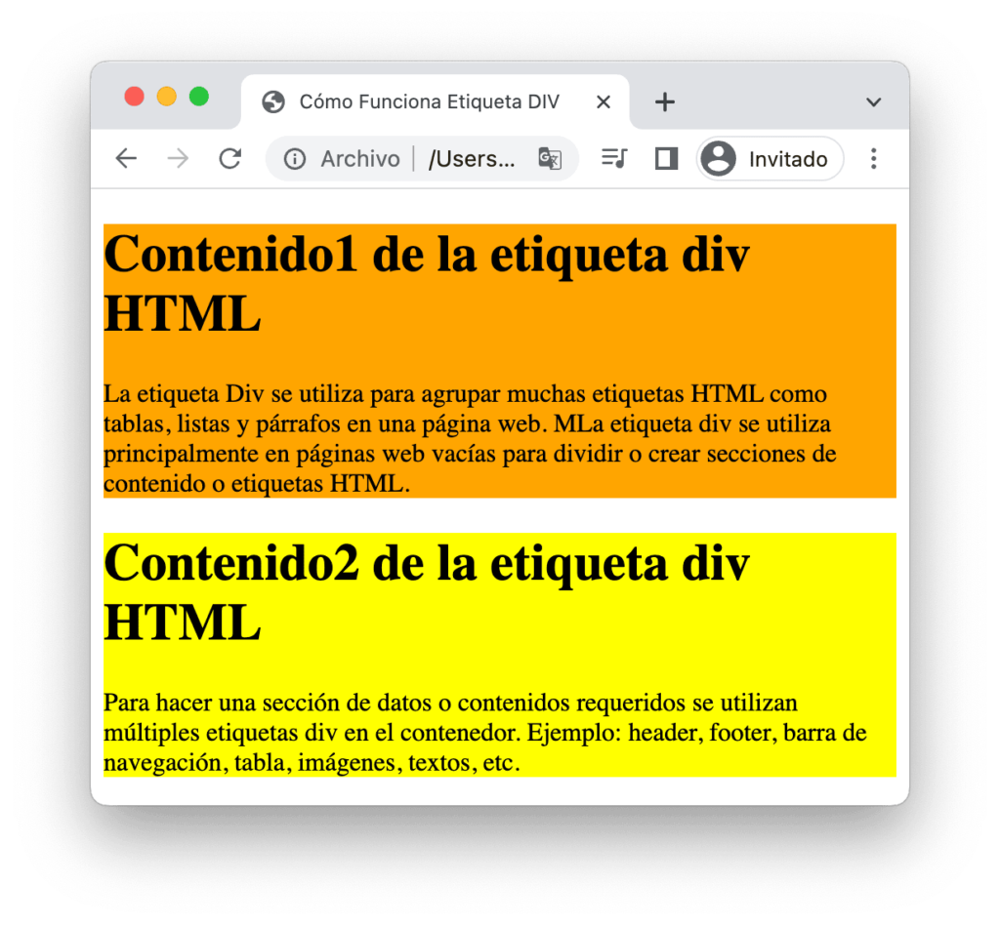SPAN
en HTML es un elemento en línea que se utiliza para aplicar estilos, scripts o manipulación específica a secciones pequeñas de texto o elementos dentro de un documento HTML.
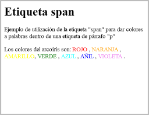SUB
en HTML se utiliza para representar texto que debe ser subíndice, es decir, que debe ser mostrado ligeramente por debajo de la línea de texto normal. Se usa comúnmente para elementos matemáticos, fórmulas químicas, notas al pie o cualquier contenido donde se requiera mostrar un texto en una posición ligeramente más baja.
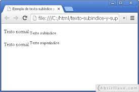SUP
en HTML se utiliza para representar texto que debe ser sobrescrito, es decir, que debe ser mostrado ligeramente por encima de la línea de texto normal. Se usa comúnmente para exponentes en fórmulas matemáticas, notas de pie o cualquier contenido donde se requiera mostrar un texto en una posición ligeramente más alt
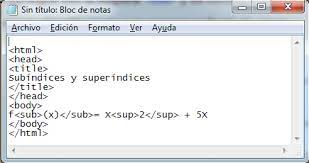WBR
es una etiqueta poco conocida pero útil. Esta etiqueta indica un posible lugar donde el navegador web puede realizar un salto de línea si es necesario, especialmente en situaciones donde el texto o el contenido se encuentra en una posición donde no se puede dividir de manera natural
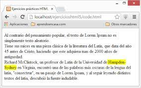BR
en HTML se utiliza para realizar un salto de línea dentro de un texto, creando un espacio vertical entre líneas. Es una etiqueta de autocierra, lo que significa que no tiene una etiqueta de cierre correspondiente
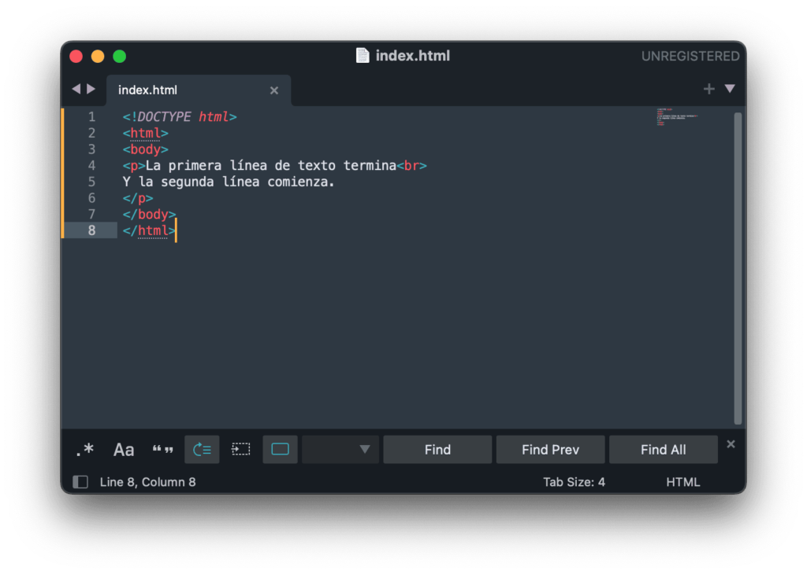MARK
se usa para resaltar o marcar secciones de texto en un documento, lo que indica que ese contenido es relevante o de interés. Se utiliza para aplicar un resaltado amarillo o similar al texto dentro de la etiqueta.
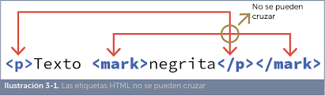time
en HTML se utiliza para marcar contenido que representa una fecha, hora o periodo de tiempo. Su propósito es proporcionar una estructura semántica al contenido relacionado con el tiempo, lo que es útil para accesibilidad, motores de búsqueda y para establecer claramente la información de fecha o tiempo en un documento.
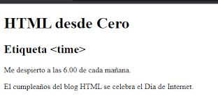ins
se utiliza para marcar el contenido insertado, es decir, para resaltar el texto que ha sido añadido o insertado en un documento en comparación con su versión original. Se emplea comúnmente en la diferenciación de versiones, como por ejemplo en comparaciones entre documentos o en la representación de cambios en un texto a lo largo del tiempo.

del
en HTML se utiliza para marcar contenido que ha sido eliminado o borrado en comparación con una versión previa del texto o documento. Es útil para resaltar el texto que ha sido eliminado, indicando claramente qué partes han sido removidas.
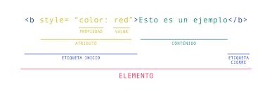data
proporciona un contenedor para valores de datos dentro del documento HTML. Es útil para almacenar información que puede ser consumida por scripts, para representar datos legibles por máquina o para proporcionar información a través de atributos personalizados.
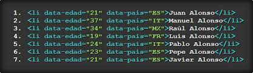